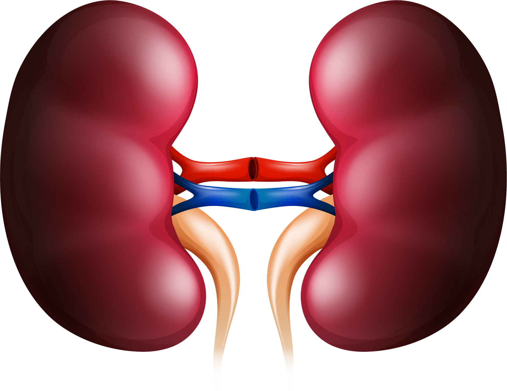
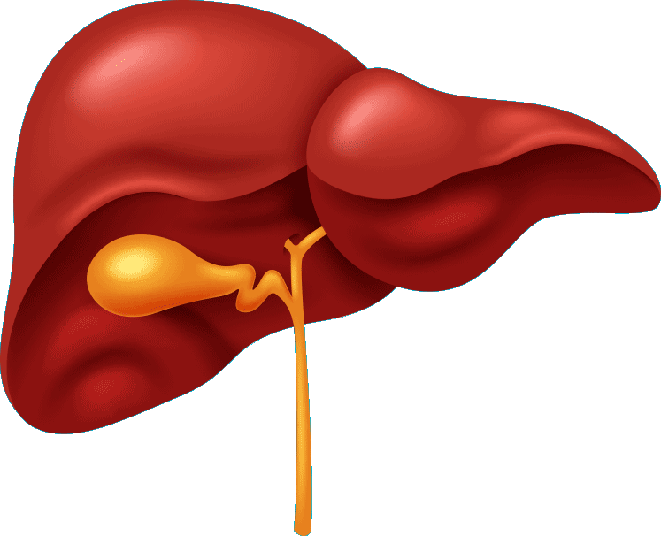
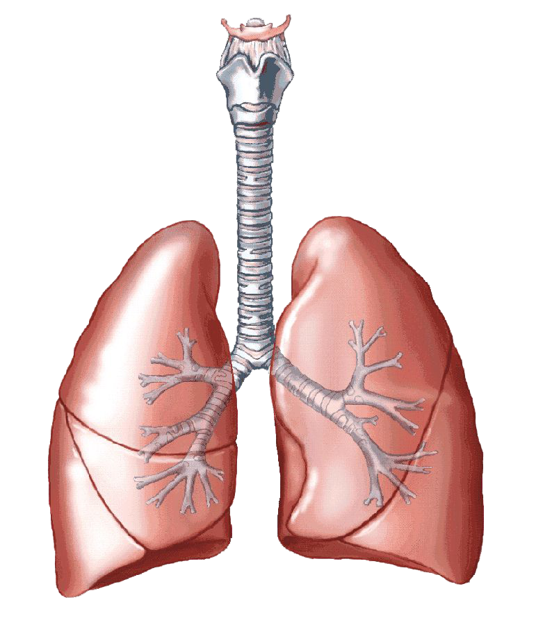

Hello There!
Always caring about your health, We are here to help you!
Nova diagnostic nearby you that you can trust
Lab tests are one of the most important factors in determining one's health. Being the backbone of the Indian
healthcare sector, we at NOVA Multispeciality Hospital 24/7 bring a plethora of lab tests at home for you to choose from NOVA
Diagnostics including a blood test at home.
If you have already been diagnosed with some disease, then the diagnostic tests will be your biomarker of how
well yourbody is responding to the treatment plan. This, in turn, will assist the doctor in tweaking the treatment plan
as andwhen required.






It is no secret that regular health checks are vital for a healthy life. Conditions such as Diabetes and Cardiac issues need regular checkups which becomes a hassle if you have to physically go to the lab each time, you’ll have the liberty to have blood tests at home.
Convenient Diagnostic Lab Tests at Home Regular health check-ups are vital for a healthy life because it helps in detecting diseases at the earliest, following a timely treatment. Nova 24|7 provides blood sample testing at your doorstep conveniently. You can book lab tests at home and utilise the home-collection facility. We offer a broad range of diagnostic lab tests such as | RT-PCR Test | Renal Profile Test (KFT, RFT) | Hemogram Test | Lipid Profile Test | Thyroid Profile Test (T3 T4 TSH) | D-Dimer Test | Urine Culture Test | Complete Blood Count Test (CBC Test) | Widal Test | Liver Function Test (LFT) | and more.